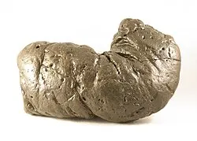

Mineral Grimoire
 Coprolite
Coprolite
Appearance
Brown. Mottled opaque stone. Rare.
Origin
UK, United States, Canada, Argentina, Australia, Germany, Morocco, France, Britain
Attributes
As may be expected from something so old, Coprolite, which is the fossilized remains of Dinosaur excrement, enhances memory and facilitates past life regression. It is particularly useful for getting to the bottom of survival issues and for finding the courage to continue what may prove to be a difficult journey through life. Mentally, it strengthens intelligence and increases intellectual stability, assisting with the assimilation of new information.
Enhancing mental flexibility and dexterity of thought processes, Coprolite opens the mind to new ideas.
Healing
Coprolite may assist the skeletal and digestive systems, stimulating the assimilation of nutrients and elimination of toxins.
Position
Grid, place or position as appropriate
Additional Notes
Also known as Dinosaur Poo. Fossilized dinosaur excrement, enhances memory and past life regression